About
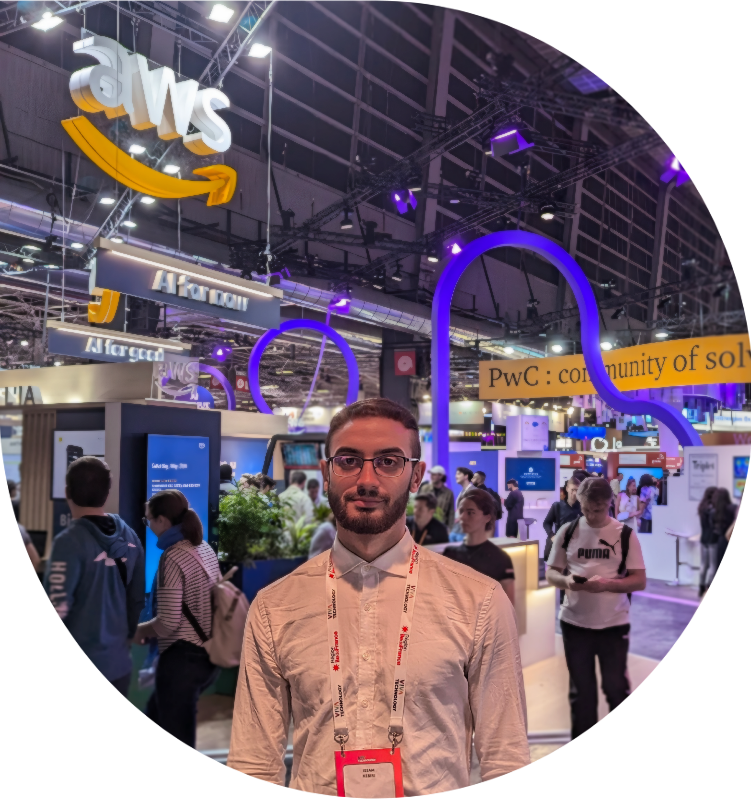
Consultant confirmé Data / BI
Hi 👋 je suis Issam KEBIRI diplômé d'un double master en Intelligence Artificielle et
en Data Science, avec une forte appétence pour les sujets techniques et un esprit analytique.
Prêt à repousser les frontières de l'innovation.
N'hésitez pas à me contacter si vous avez des questions ou si vous souhaitez discuter d'opportunités professionnelles :
- Numéro tél: +33 753757001
- Adresse: Paris, France
- Mobilité: Internationale
- Email: issam.eddine.kebiri@gmail.com
- LinkedIn: Issam Kebiri
- GitHub: Issam Kebiri
Skills
Durant mon parcours académique en IA & Data, j'ai acquis de solides compétences en
analyse et modélisation de données, ainsi qu’une bonne maîtrise des technologies et outils
clés du domaine tels que Python, Spark, SQL, AWS, Databricks et Power BI.
J’ai ensuite consolidé ces compétences au cours de mes trois années d’expérience en tant que consultante chez
ActOn Data, en mission chez TotalEnergies, où j’ai participé à plusieurs projets
Data autour des sujets RH et décisionnels. Mes missions comprenaient le
recueil des besoins métier à travers des ateliers, l’étude de faisabilité des solutions, la
modélisation de données, ainsi que l’extraction, transformation et prétraitement de données brutes
dans Databricks.
J’ai également conçu des dashboards interactifs Power BI, développé des indicateurs de pilotage,
automatisé des pipelines de données et participé à la gestion et maintenance des workflows CI/CD.
Ces projets m’ont amenée à travailler sur des problématiques de
sécurité et gouvernance des données, d’optimisation des performances et
d’amélioration continue des traitements Data.
En collaboration avec les équipes métiers et techniques, j’ai contribué à l’analyse des anomalies, à la recette des solutions
et à la mise en place de solutions data-driven adaptées aux besoins utilisateurs.
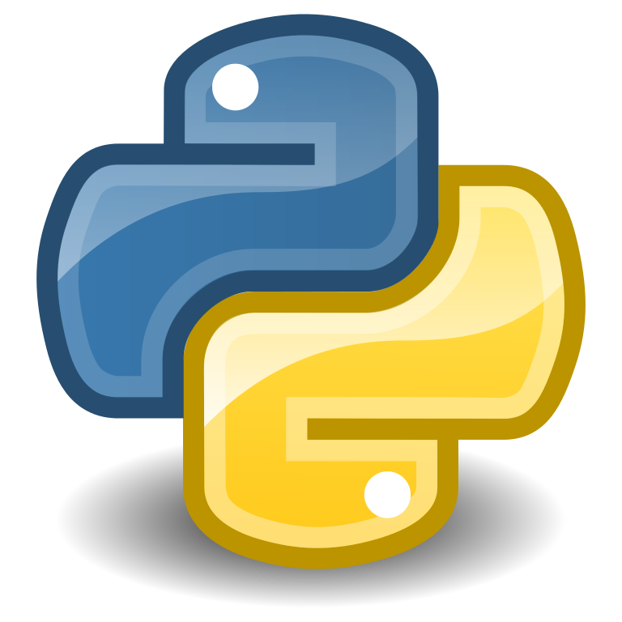
Python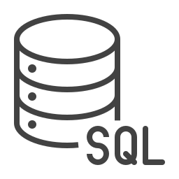
SQL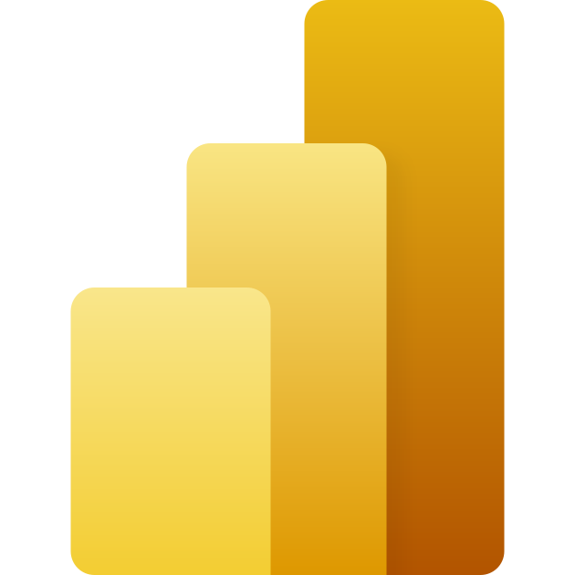
PowerBI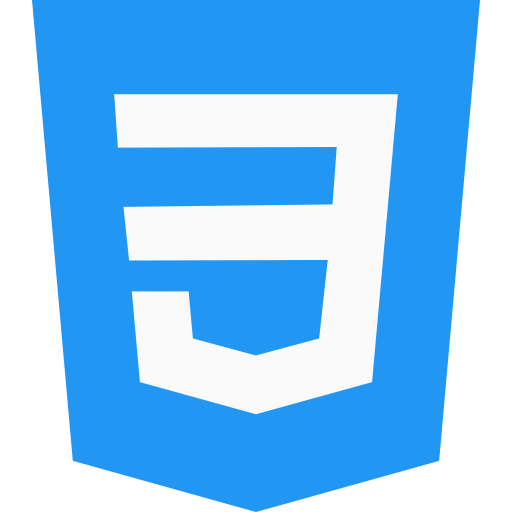
HTML/CSS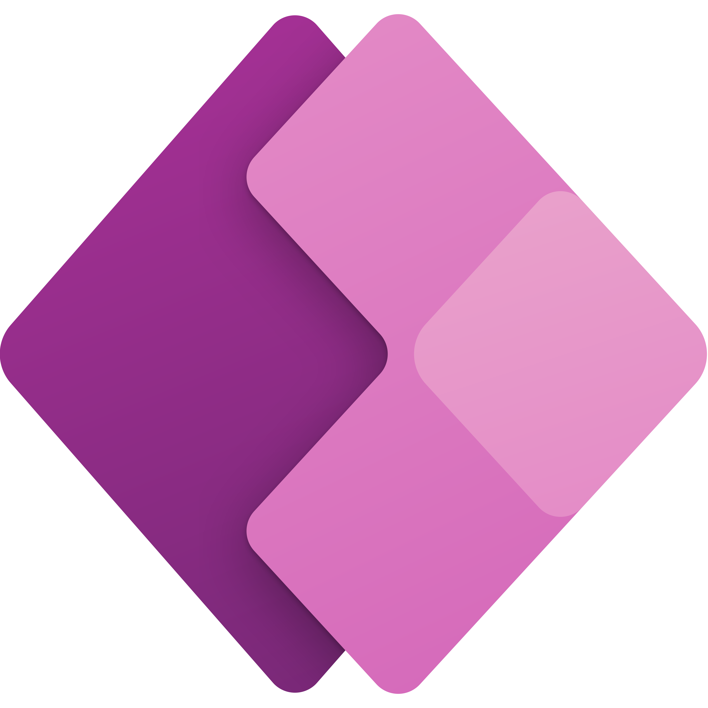
PowerApp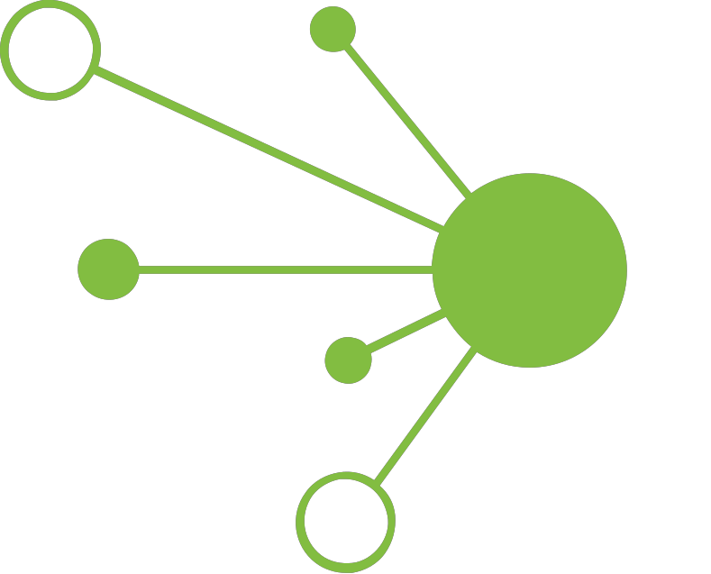
Talend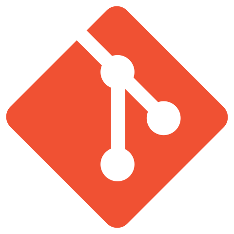
Git/GitHubEducation & Work Experience
Dans cette section, je vous présente mon parcours académique et mes expériences professionnelles.
J'ai une expérience diversifiée en enseignement, recherche universitaire, et travail en entreprise, qui me permettent de
mettre en pratique les concepts théoriques appris dans mes études, ces expériences denses et riches en apprentissages, m’ont permis de développer non seulement mon savoir-faire technique
mais aussi ma capacité à travailler en équipe et à gérer des projets de manière efficace
Education
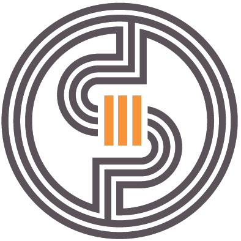
Master Data Science⏳ 2022 - 2023
🏢 Université Toulouse III - Paul Sabatier
➤ Cours suivis :
Apprentissage par renforcement • Traitement du langage naturel •
Gestion de bases de données relationnelles • Sémantique Web • Traitement Big Data • Planification et prise de décision •
Analyse de graphe et réseaux sociaux • Traitement de la parole
Stage R&D - Deep Learning
⏳ févr. 2021 - juill. 2021
🏢 Laboratoire SIMPA - Usto
➤ Réalisation du Projet fin d'études :J'ai eu l'occasion de réaliser un stage de six mois au sein du laboratoire SIMPA (Signal, IMagerie et PArole) à l'université Usto ou j'ai pu analyser des images histopathologiques des maladies hépatiques avec des outils Deep Learning en utilisant TensorFlow et Keras, en plus d’une solide expérience en développement, ce stage m'a permis d'acquérir des compétences en :
-
➥ Analyse de problématique, élaboration de stratégie et méthodologie de résolution de problème
➥ Forte aptitude d’adaptation, esprit de synthèse et d’initiative
➥ Méthodologie agile et gestion de projet
Master Intelligence Artificielle
⏳ 2019 - 2021
🏢 Université des Sciences et de la Technologie d'Oran
➤ Cours suivis :
Machine/Deep Learning • Analyse de données • Théorie de l'information •
Data mining • Reconnaissance des formes • Scoring et ciblage marketing • Système multi-agents
Licence Systèmes Informatiques
⏳ 2016 - 2019
🏢 Université des Sciences et de la Technologie d'Oran
➤ Cours suivis :
Algorithmique • Structure et modélisation de données • Programmation
orientée objet Génie logiciel • IHM • Gestion de projets • Algèbre linéaire • Statistique descriptive et probabilités •
Théorie des graphes • Génie logiciel • Réseau informatique
Résultat universitaire :
➥ Diplômé avec mention Tés bien et parmi les cinq majeurs de promotion en Master➥ Certifié DALF C1 en Français par l'FEI (France Éducation International)
➥ Certifié B2 en Anglais par C.E.I.L Usto
➥ Lettre de recommandation Pr BENAMRANE
➥ Lettre de recommandation Pr ZENNAKI
➥ Lettre de recommandation Pr BENDELLA
Professional Experience
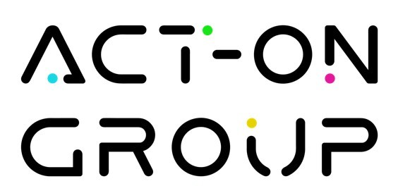
Consulatnt confirmé Data / BI⏳ avril 2023 - aujourd'hui
🏢 ACT-ON Group
➤ Tâches réalisées :Je travaille sur plusieurs projets auprès de divers clients, dont TotalEnergies. Mon rôle implique la compréhension des besoins du client, la conception et la mise en place de solutions BI efficaces, ainsi que l'analyse des données pour guider le client dans la prise de décisions éclairées. Plus précisément :
-
➥ Exploitation des bases de données brutes
➥ Prétraitement et mise à disposition des Datasets
➥ Collecte et analyse des besoins des utilisateurs finaux
➥ Ėtude des flux de mouvement interne des salariés
➥ Développement de KPI et création de Dashboard
➥ Utilisation de DAX pour créer des mesures personnalisées
➥ Identification et visualisation des tendances, des modèles et des insights clé
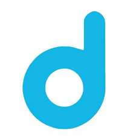
Stage conseiller HelpDesk⏳ juin 2022 - août 2022
🏢 Digimium Opérateur & Intégrateur Télécom pour Entreprises
➤ Tâches réalisées :En tant que conseiller et HelpDesk dans une Startup leader du marché de télécommunication IP en France, mon travail consistai à mettre en place et configurer des solutions de téléphonie IP, extraire et analyser des données téléphoniques et de consommation internet selon les demandes des clients, et apporter du support en m’assurant du bon fonctionnement des différents matériels et services que la boite proposer en tout temps, ce stage m’a appris :
-
➥ Identification et analyse des besoins des clients
➥ Réalisation de suivi et respect du planning
➥ Accompagner, conseiller et former le client
➥ Gestion de la pression et apprentissage de nouveaux concepts
Enseignant de mathématique
⏳ nov 2021 - mai 2022
🏢 Lycée public Djeffal Miloud
➤ Tâches réalisées :J’ai également eu une expérience en tant qu'enseignant de mathématiques pendant un an au niveau de l’enseignement secondaire publique en Algérie ou j'ai pu bénéficier d'une formation d'un mois sur les techniques d'enseignement et de communication qui m'a permis de consolider mon savoir en mathématique et statistique et d'acquérir de solides notions en :
-
➥ Préparation de supports pédagogiques
➥ Développement d'aptitudes en communication et la capacité à présenter des sujets complexes
➥ Coordination et travail en équipe
Projects
Dans cette section, je vous présente les projets auxquels j'ai participé et qui ont contribué à
développer mes compétences et mon expertise dans le domaine. Ces projets ont été réalisés dans le cadre de mes
études.
Ils couvrent une large gamme de domaines et de technologies, et m'ont permis de mettre en pratique mes connaissances et
de développer de nouvelles compétences, vous trouverez plus de détails sur mon dépôt GitHub
- All
- Python
- Dashbord & DB
- Others
Analyse d’images histopathologiques par un réseau de neurones
Déscription du projet :
Analyse et segmentation d’images histopathologiques des hépatites du foie en
s’inspirant des nouvelles approches et études dans le domaine d’apprentissage profond en utilisant
TensorFlow 2.5 et Keras 2.2 pour l'implémentation d’un réseau de
neurones
convolutif entièrement connecté basé sur l’architecture de UNet sur un jeu de données de
données de 2909 images
Création de Dashboard des ventes d'un distributeur électroménager
Déscription du projet :
Création de
Dashboard et analyse des ventes d'une société de distribution
d'articles électroménager et sports pour l'année 2020 & 2021 sur la base de deux
fichiers Excel . Relations visualisées sur le Dashboard : Vente par Date, Quantité vendue par
Clients, Quantité vendue par Trimestre, Quantité vendue par Produit, Vente par Responsable de compte, Totale
quantité
vendue, Totale des ventes en €. Filtres réalisés sur Clients, Pays et Années (2020 ou 2021)
Classification des mails spams/hams
Déscription du projet :
Le but de ce projet est de réaliser une classification de documents, il
consiste
à classifier des mails en spams/hams en utilisant plusieurs techniques de Machine Learning, en passant par les
étapes principaux : Récolte des données, Nettoyages et préparations des données (ponctuation, stops words, TF-IDF),
lemmatization, vectorisation, construction des jeux de données pour l'entrainement et le test afin d'évaluer nos
modèles
Système de recommandation de restaurants YELP
Déscription du projet :
Le projet traite un cas d’étude qui concerne le site participatif d’avis Yelp ou des utilisateurs
donnent leur avis sur des restaurants. Nous proposerons une Modélisation permettant de couvrir ce
cas d’étude ainsi qu'un script python permettant de transformer et nettoyer le
Dataset en json en autant de fichiers .csv que nécessaire pour créer une nouvelle base
de données locale sous neo4j et définir les requêtes en langage cypher permettant
de construire un moteur de recommandation d’influenceurs basé sur un score d’influence
des utilisateurs de la plateforme
Optimisation du plan d'acquisition d'images d'un satellite
Déscription du projet :
Ce projet est réalisé
avec l'optimiseur IBM ILOG CPLEX basé sur le
langage OPL et à pour objective de déterminer et optimiser les meilleurs plans
d'acquisition d’images par instruments dans un satellite : quel ordre d'images sera acquis et par quel
instrument en respectant un certain nombre de contraintes
Administration d'une BD Oracle
Déscription du projet :
Ce projet concerne l'administration d'une base de données Oracle. Il comprend la modélisation de la base de données, la
gestion des transactions sous Oracle, la mise en place de Triggers pour automatiser certaines tâches, la conception
d'une BDR (base de données relationnelle) pour gérer les données de manière efficace, l'évaluation de requêtes réparties
pour garantir la performance de la base de données, ainsi que la gestion de vues pour faciliter l'interaction avec les
données et la restructuration de la base de données pour améliorer les performances
Manipulation des séquences nucléotides
Déscription du projet :
Ce projet se compose en
trois
parties : d'abord l'exploitation des principaux bases de données de protéines (Protein Data Bank)
:
NCBI,
PDB et PubMed pour ensuite décortiquer un article scientifique basé sur l’application des outils de l’IA sur
des séquences nucléotides.
Deuxièmement, une étude des outils BLAST et FASTA et l’alignement des séquences
en
utilisant ces outils.
Et troisièmement, programmer la méthode d’alignement globale par programmation dynamique en
python
et de déduire l’arbre phylogénique par la méthode UPGMA
Implémentation d'une solution ETL pour l'intégration de données et gestion des BigData sous Talend
Déscription du projet :
Ce projet consiste à implémenter une solution ETL (Extract-transform-load) sous Talend Open Studio pour une intégration décisionnelle et opérationnelle de différentes sources de
données hétérogènes et notamment avec des scripts en java dans le contexte de migration, stockage, consolidation et synchronisation
de données. les taches à réaliser sont : Conceptions de jobs, intégration des bases de données PostgreSQL
et Oracle, définition des schémas de métadonnées, automatisation avec des scripts exécutables
100 SQL Queries Challenge
CHALLENGE :
100 requêtes
SQL sur un Dataset de jeu rpg en utilisant le serveur Web XAMPP v3.3.0, la base de
données MySQL et l'interface phpMyAdmin. Les requêtes traitent les aspects suivants :
les String, les opérateurs logiques, les fonctions calculs : COUNT, SUM, AVG, MIN, MAX, les différents types de jointures,
le regroupement, les requêtes imbriquées, gestion CRUD des tables et des données, gestion des dates
SOIVD – Système Optimisé d’Intégration Virtuelle De Données
Déscription du projet :
Le but
de ce projet est de créer un Système Optimisé d’Intégration Virtuelle De Données - SOIVD qui
utilisera
différentes bases de données et APIs liées à l'énergie et à la météo pour
apporter une analyse
du contexte actuel de la crise énergétique. Notre système SOIVD implémenté avec une architecture
médiateur-adaptateur
et une capacité d'intégration de plusieurs sources de données hétérogènes aura pour but ultime est d'offrir un
accès uniforme
à des sources multiples, autonomes et hétérogènes de données structurées à travers des requêtes
SQL et une
interface Web
Gestion et analyse de données avec Spark
Déscription du projet :
Simulation sous
Ubuntu 20.04 de l'environnement Spark pour gérer et analyser des fichiers bruts de données avec des
images contenaires Docker pour simuler le travail des clusters (2 nœuds, un master et un worker). Ce projet
traitera aussi les actions et transformations applicables sur un RDD notamment
MapReduce et flatMap, ainsi que la
manipulation des DataFrame, requêtes avec SQL et interagir avec PySpark. On finira le
travail par une sauvegarde au format Parquet
Mise en place de Google Analytics 4 pour mon Portfolio
Déscription du projet :
Mise en place et
paramétrage de GA4
sur mon Portfolio pour l'analyse web des indicateurs et des insights suivants : aperçu en temps
réel des performances,
trafic global sur le site web, analyse d'audience et type d’appareil utilisé, informations démographiques sur les
visiteurs, tableau de bord des événements (clics, téléchargements et statistiques sur les
sessions)